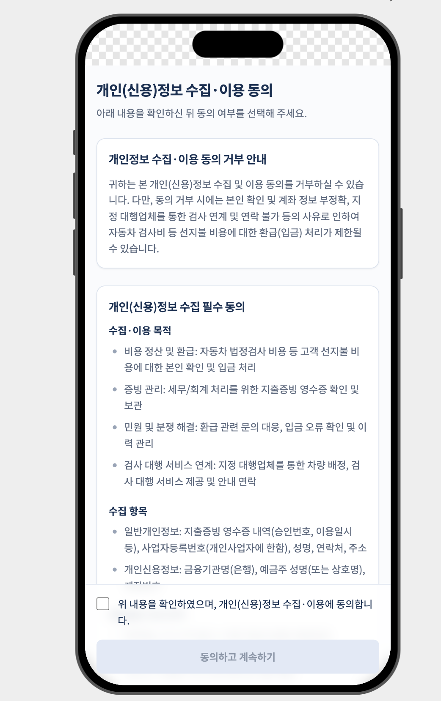
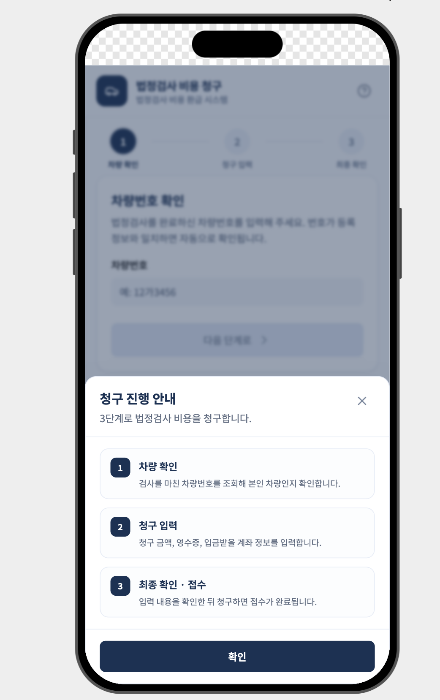
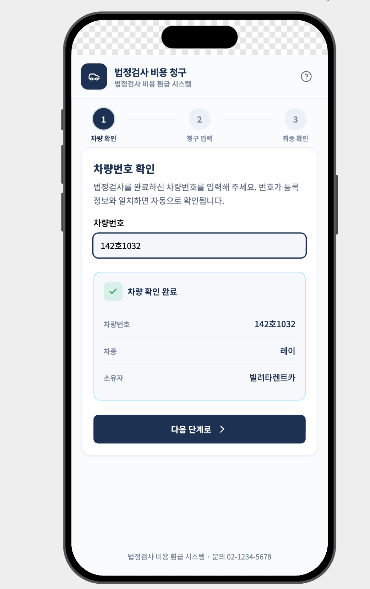
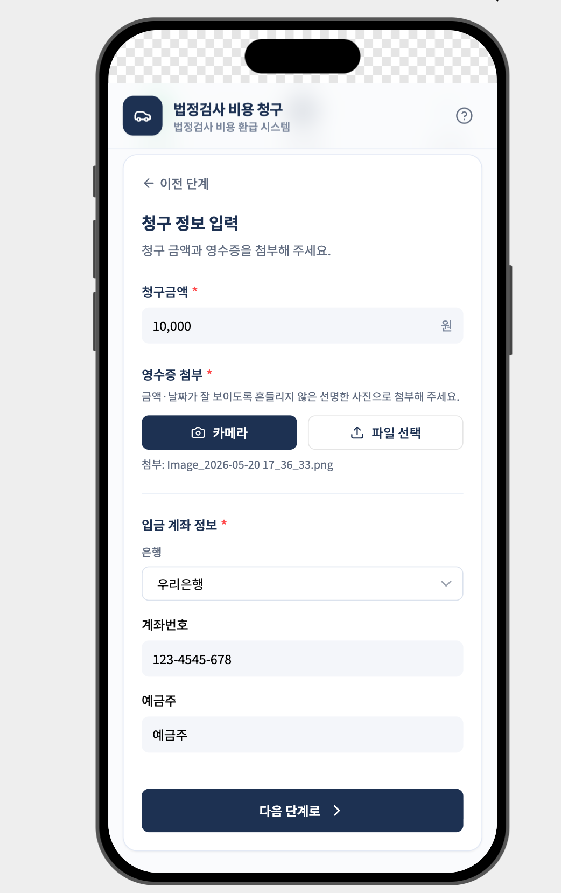
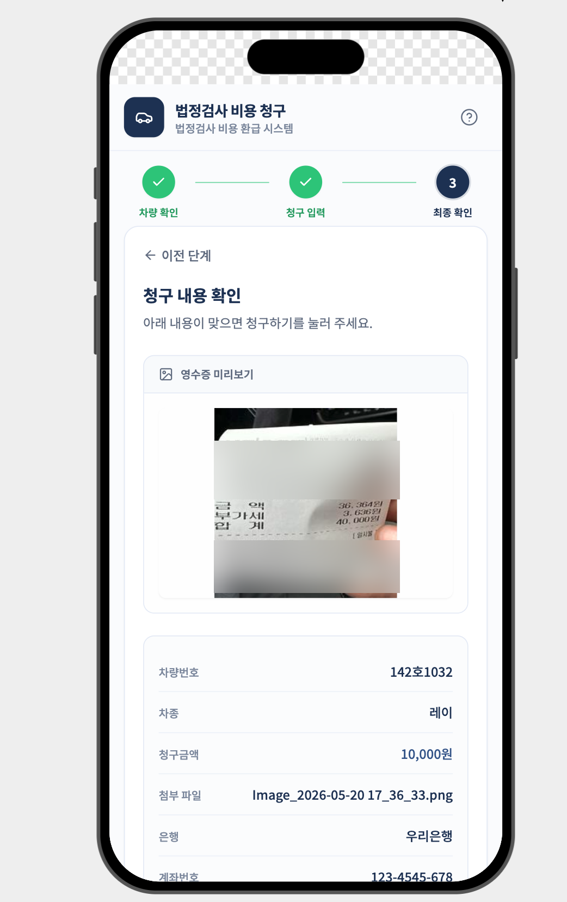
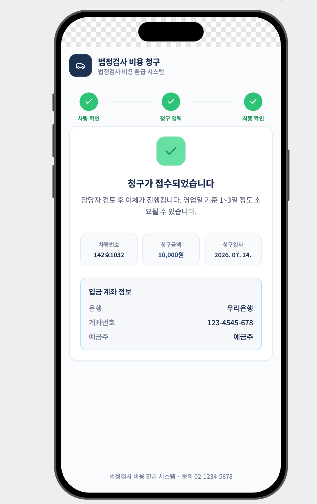
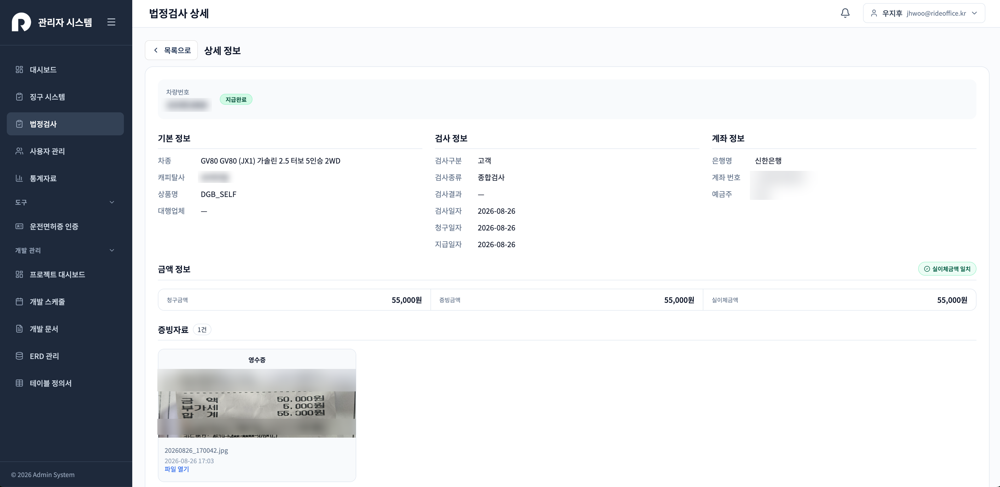
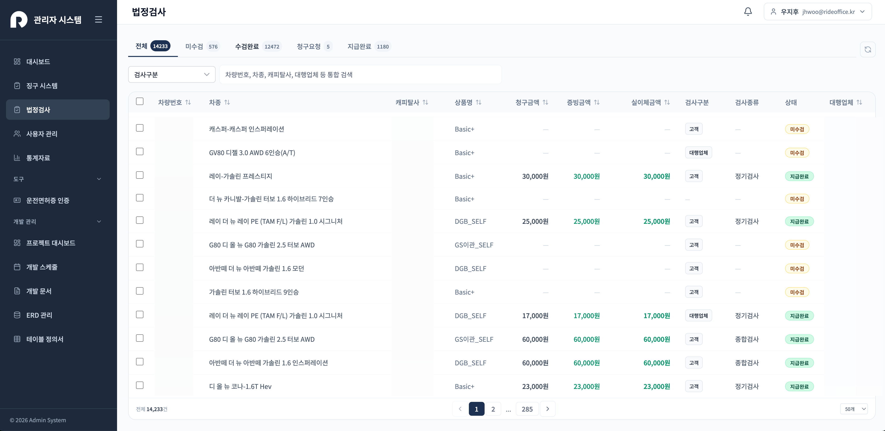
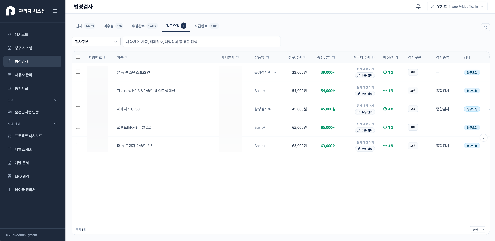
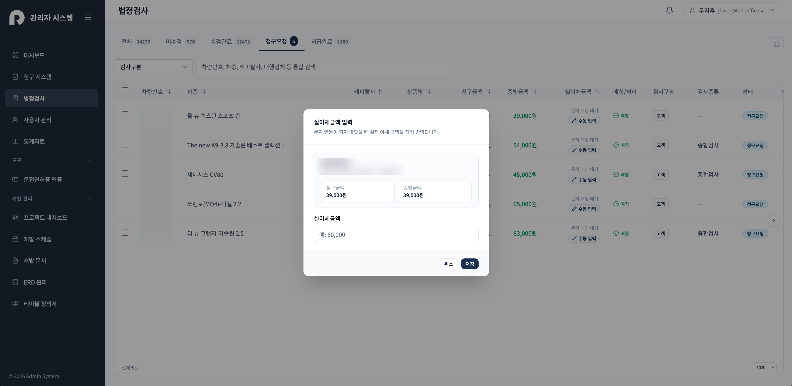

정산 관련 전화 1,102건 → 844건 (약 23% 감소)
전화·카카오톡·수기 대량이체로 처리하던 검사비 정산을 셀프 청구 플로우로 전환 — 월 전화량 기준 도입 전(5월) 1,102건에서 도입 후(7월) 844건으로 감소
열흘 만에 1인 구축
기획부터 디자인, 프론트엔드까지 10일 만에 배포 — 고객 플로우를 3단계로 최소화하고 복잡함은 어드민에 배치
1만 4천여 건 상태 파이프라인 관리
미수검 → 수검완료 → 청구요청 → 지급완료 흐름으로 14,000건+ 차량의 검사·정산 현황을 한 화면에서 관리
금액 3중 대조 구조 설계
LLM OCR 자동 입력값을 청구·증빙·실이체 금액으로 분리 대조하고, 입금 문자 자동 매칭과 수동 폴백까지 설계
01문제 — 정산 창구가 전화였다
고객이 법정검사를 받고 나면 이렇게 흘러갔습니다. 고객(또는 검사소)이 팀에 전화를 걸어 "검사받았으니 정산해 달라"고 알리고, 담당자가 카카오톡 비즈니스로 영수증을 받아 확인한 뒤, 국민은행 대량이체에 수기로 등록해 송금합니다. 그리고 그 내역을 다시 손으로 정리합니다.
관리 차량이 1만 4천 대가 넘는 규모라 전화가 끊이지 않았고, 영수증–청구 금액–실제 이체 금액을 사람이 눈으로 대조하다 보니 시간도 오래 걸리고 누락 위험도 컸습니다. 이 흐름 전체를 시스템으로 옮기는 것이 목표였고, 이번에도 프론트는 저 혼자였습니다.
02접근 — 전화 대신 링크 하나
고객이 전화를 걸 필요가 없도록, 링크 하나로 청구가 끝나는 모바일 플로우를 만들었습니다. 동의 → 차량번호 확인 → 청구 입력 → 최종 확인 → 접수의 3단계 구조로, 처음 들어온 사용자를 위해 진행 안내 모달을 먼저 보여줍니다.






차량번호를 입력하면 등록된 차량 정보(차종·소유자)를 조회해 보여줘서, 고객이 자기 차가 맞는지 그 자리에서 확인하고 넘어갑니다. 카메라 촬영과 파일 업로드를 모두 지원해 현장에서 영수증을 바로 찍어 올릴 수 있습니다.
03Deep dive — 영수증은 LLM이 읽고, 검수는 사람이
고객이 올린 영수증은 LLM(Claude Sonnet 4.5) 기반 OCR 파이프라인이 파싱해 금액이 어드민의 청구 건에 자동 입력됩니다. 담당자가 카카오톡으로 영수증을 받아 금액을 옮겨 적던 일이 사라졌습니다. 파싱 파이프라인 자체는 백엔드 개발자가 구축했고, 저는 그 자동화가 안전하게 쓰이도록 앞뒤의 화면 구조를 설계하고 구현했습니다.
핵심은 자동 인식 값을 그대로 믿지 않는 구조입니다. 금액을 청구금액(고객 입력) / 증빙금액(영수증 인식) / 실이체금액(실제 송금) 세 값으로 분리해 관리하고, 셋이 일치해야 "실이체금액 일치" 상태가 됩니다. 불일치하면 담당자가 금액 수정 모달로 보정합니다.

04Deep dive — 이체 확인까지 자동으로
송금이 실제로 됐는지 확인하는 일도 수작업이었습니다. 은행 입금 문자를 연동해 청구 건과 자동 매칭하고 실이체금액을 채우도록 했고, 문자 연동이 안 되는 경우를 위해 수동 입력 폴백을 함께 설계했습니다. 외부 연동은 반드시 실패하는 경우가 있다는 걸 이전 프로젝트에서 배웠기 때문입니다.



05기술 스택
06배운 것
- 자동화의 목표는 사람을 없애는 게 아니라 전화를 없애는 것. 반복 커뮤니케이션은 시스템이 받아내고, 사람은 판단과 검수에만 개입하게 만들었다.
- 돈이 걸린 자동화는 대조 구조가 전부다. 청구·증빙·실이체 세 값을 분리하고 일치를 검증하는 구조가 자동 입력을 믿을 수 있게 만든다.
- 열흘짜리 프로젝트는 범위 결정이 90%다. 고객 플로우는 3단계로 최소화하고, 복잡함은 어드민 쪽에 몰아넣었다.